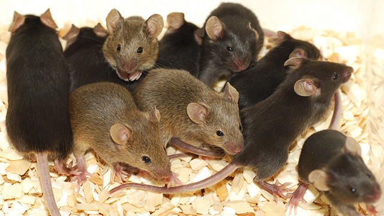
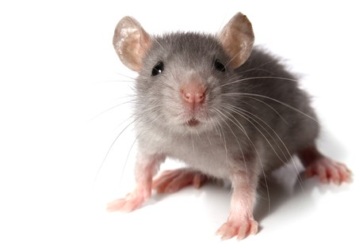
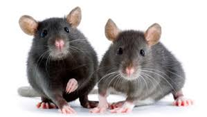
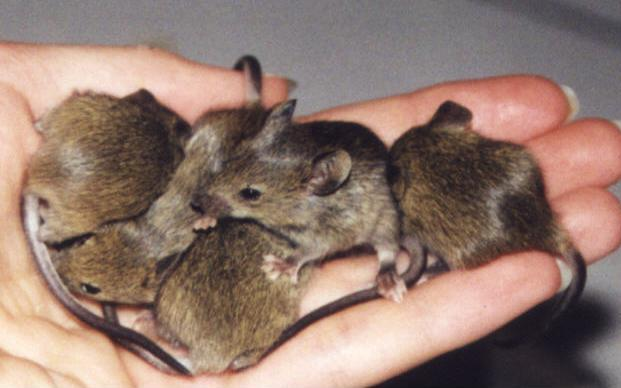
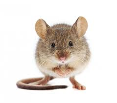
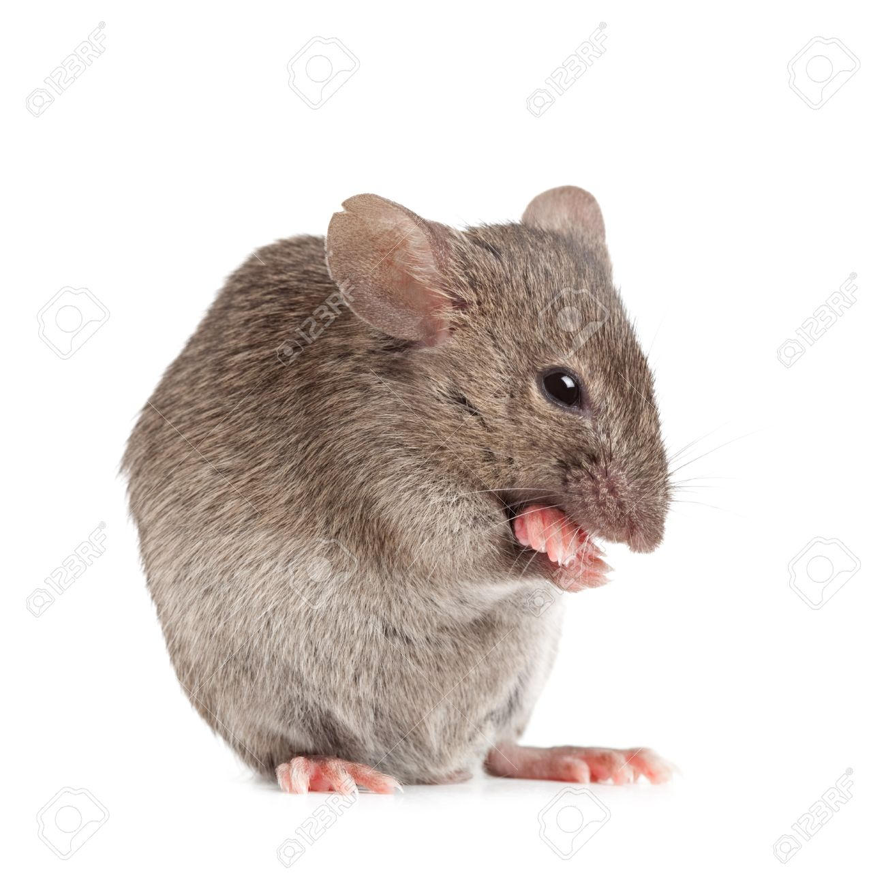

6 Bad Feelings The Bastard Mice Give Me
My home is not my home. It's the mice's home now. This is not one of the bad feelings the bastard mice give me; it is a fact. Spend any amount of time within the confines
of what was my fortress and you, too, will discover this to be true. Since the mice started running my kitchen, determining my hot water usage, and opening my doors for me,
I have been feeling some fresh feelings, and as is usually the case with my fresh feelings, I do not know how to confront them head-on. Feel free to share your suggestions!
- 1. The mice are faster, smarter, and stronger than me.

They continue to evade my traps and munch on my snacks.
- 2. The role which I play in the world is shifting.

I used to be the boss -- not of everything, but at least of my own personal space, my little bubble. This feeling might also be reflective of larger concerns.
- 3. I am a little man.

Logically I know that the mice are not as big as I am. I am a human being. But infestations on this scale can make you question every rational thing you know.
- 4. I am doing something wrong.

What invited these mice into my world?
- 5. I am not dexterous.

I do not hold a candle to these swift, furry demons; I lumber; my limbs flail through the air in an unsightly and comical fashion as I make chase.
- 6. I do not know what I thought I knew.

If a living creature can eat and breathe and frolic just beyond these walls -- what else is happening without my knowing?
- Return to Listicle Website.